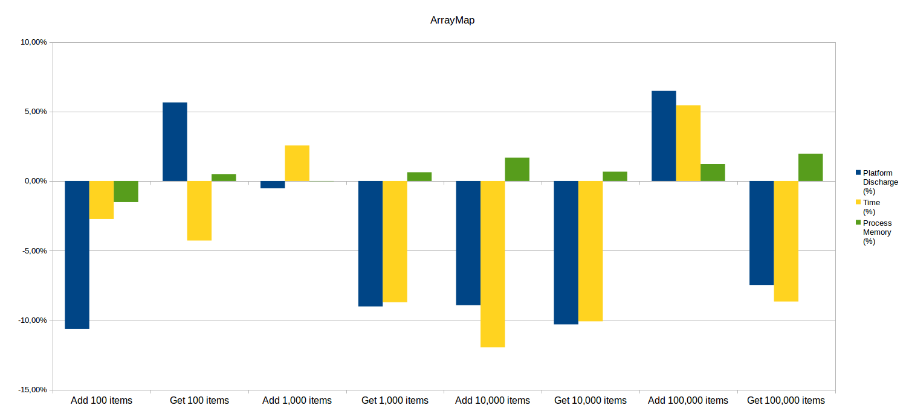
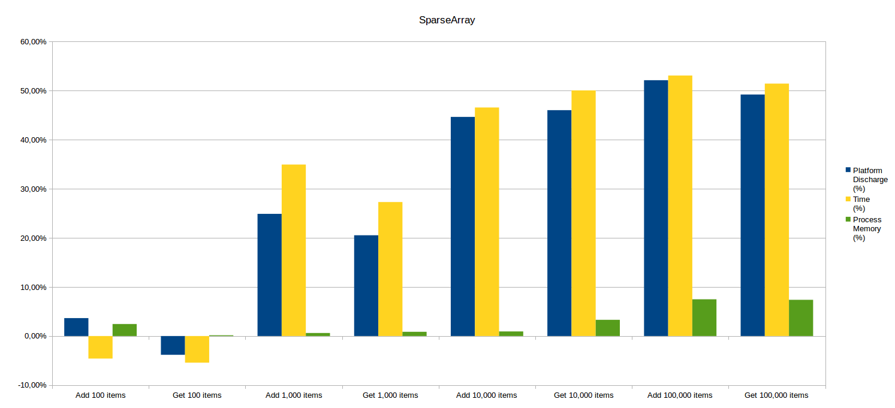
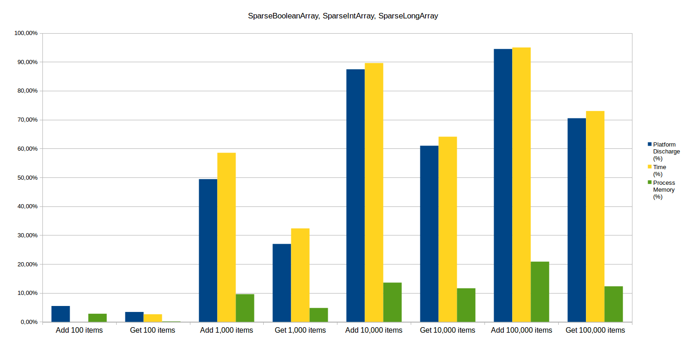

La maîtrise de la consommation énergétique est un domaine de plus en plus important dans le développement d’applications mobiles. Les dernières versions d’Android intègrent par exemple un mode doze dans lequel le smartphone interrompt les traitements et ne les réveille que périodiquement, mais cela n’est pas suffisant et les développeurs d’applications ont également un rôle à jouer.
À l’échelle d’une application, il est possible d’améliorer la consommation énergétique en commençant par bien choisir ses structures de données.
Justement, Android propose des structures destinées à remplacer les HashMap pour certains usages particuliers : les SparseArray et les ArrayMap.
Comment se comparent-elles aux structures couramment utilisées en Java ?
Présentation des participants
Android propose des structures de données visant à remplacer HashMap dans des contextes spécifiques :
| Structure Java Standard | Structure Android correspondante |
|---|---|
| HashMap<K, V> | ArrayMap<K, V> |
| HashMap<Integer, V> | SparseArray<V> |
| HashMap<Integer, Boolean> | SparseBooleanArray |
| HashMap<Integer, Integer> | SparseIntArray |
| HashMap<Integer, Long> | SparseLongArray |
| HashMap<Long, V> | LongSparseArray<V> |
Commençons par décrire le fonctionnement basique de ces deux types de structure.
Une HashMap est une structure permettant de stocker des éléments (clé, valeur). Une fonction de hachage associe à chaque clé un indice dans un tableau (où sera stocké l’élément).
Les structures Android sont quant à elles composées de deux tableaux : ArrayMap utilise un tableau trié pour les hachages des clés et l’autre pour les couples (clé, valeur) de ses éléments, et SparseArray conserve les clés triées dans le premier tableau et les valeurs dans le second.
En terme de complexité, la recherche d’un élément stocké dans une HashMap se fait avec une complexité constante en moyenne (logarithmique pour les structures SparseArray et ArrayMap).
Cependant, utiliser une HashMap introduit un surcoût mémoire (la taille de la structure doit être suffisamment grande pour éviter les collisions). De plus, elle ne permet pas d’avoir des clés ou des valeurs de type primitif (int, long, etc.).
Quelle structure faut-il donc préférer ?
Plusieurs ressources sont disponibles en ligne pour se faire un avis sur les avantages de chaque structure.
Dans sa présentation Exploring hidden Java costs, Jake Wharton explique en détail le fonctionnement des HashMap et des SparseArray pour justifier l’intérêt de ces derniers. En revanche, cela ne fonctionne selon lui que pour les structures de taille relativement petite (de l’ordre du millier d’éléments).
Dans l’article HashMaps, ArrayMaps and SparseArrays in Android, Deepak Mishra détaille également le fonctionnement des différentes structures et présente en plus la complexité algorithmique de chaque opération pour argumenter son propos. Sa conclusion est que le passage aux ArrayMap et SparseArray est bénéfique en termes de création d’objets, sans impact important sur les performances.
Android performance patterns – ArrayMap vs HashMap donne l’avantage à ArrayMap uniquement dans le cas de petites structures (moins de 1 000 éléments) ayant beaucoup d’accès.
Romain Guy dresse les mêmes conclusions dans sa présentation Android Memories. Il montre le gain en mémoire apporté par la structure SparseIntArray par rapport à HashMap (pour une taille de 1 000 éléments) mais déconseille l’utilisation des structures Android pour des grandes structures.
Android Performance Tweaking: ParseArray Versus Hashmap étaye ses arguments par des mesures de temps d’accès et d’écriture pour des tailles allant de 1 à 1 million d’éléments. Ses conclusions sont que SparseArray est plus intéressant à partir de 10 000 éléments, en particulier si les structures sont plus utilisées en écriture qu’en accès. Enfin, il est globalement déconseillé d’utiliser des structures de plus de 10 000 éléments.
Dans cet article plus récent, Memories of Android, les structures Android sont préconisées lorsque les clés sont de type primitif et que le nombre d’éléments est inférieur à quelques centaines.
Enfin, la documentation Android indique pour les ArrayMap et SparseArray que ces structures n’ont pas été conçues pour stocker un grand nombre d’éléments, en particulier parce que la recherche d’élément se fait de façon dichotomique, ce qui est pénalisant face au calcul de hachage du HashMap.
Au regard de ce rapide tour d’horizon, le moins que l’on puisse dire est qu’il est difficile de se faire un avis. Les collections spécifiques à Android semblent efficaces pour stocker un petit nombre d’éléments, mais les avis divergent quand on s’approche de 10 000 (voire même 1 000) éléments.
Le seul article fournissant des résultats de mesure est ancien puisqu’il utilisait un Samsung Galaxy 2 sous Android 2.3.4. et beaucoup de choses ont changé depuis dans l’univers Android (passage de JIT à ART, par exemple). Les autres articles ou présentations sont plus récents mais ne proposent pas de mesures et a fortiori pas de mesures d’énergie.
Il est donc intéressant de mesurer l’utilisation de toutes ces structures, d’un point de vue performance, mais aussi consommation mémoire et énergétique.
Méthode de mesure
Réaliser des mesures sur smartphone nécessite de contrôler au maximum son environnement. En effet, beaucoup de facteurs externes peuvent venir perturber l’activité de l’appareil. De plus, s’il est possible de relever l’utilisation du CPU pour un processus donné, ce n’est pas le cas de la consommation énergétique. Le niveau de décharge batterie fourni par le système concerne la plateforme globale et il faut donc améliorer autant que possible le rapport signal/bruit de nos mesures en contrôlant toutes les activités tierces.
Sur notre fidèle Nexus 5 sous Android 5, nous avons donc :
- fixé la luminosité de l’écran au plus bas ;
- désactivé le GPS et le Bluetooth ;
- désactivé le contrôle par la voix (« Ok, Google ») ;
- désactivé les mises à jour automatiques et les notifications ;
- etc.
De plus, toutes les mesures ont été réalisées avec un niveau de charge de la batterie situé entre 20 et 80 %. En effet, le comportement du smartphone change beaucoup au-delà de ces valeurs. Par exemple, quand le niveau de batterie devient faible, Android se fait plus agressif sur l’économie de ressources.
Nous avons utilisé la sonde Android développée au sein de GREENSPECTOR, permettant de récupérer plusieurs métriques soit liées à la plateforme globale, soit liées à un processus particulier (dans notre cas, le processus Java effectuant l’insertion ou l’accès à la structure de données) :
- la durée de la mesure ;
- la décharge de la batterie en Ah ;
- la consommation mémoire du processus.
Pour chaque structure, nous avons évalué séparément l’insertion et l’accès aux données. L’insertion se fait dans des structures initialisées avec leur taille par défaut, ce qui induit nécessairement un surcoût lors de leur redimensionnement. Chaque mesure a été répétée au moins 5 fois pour garantir la stabilité des résultats.
Résultats
Il est maintenant temps d’observer les résultats afin de déterminer l’apport des ArrayMap et SparseArray par rapport aux HashMap!
ArrayMap
Pour cette structure, les résultats sont assez similaires pour les tests d’écriture et d’accès. L’avantage est globalement pour HashMap en énergie et performance, avec cependant des gains assez faibles (inférieurs à 10 %).
En ce qui concerne la mémoire, HashMap et ArrayMap sont comparables car les gains observés sont très faibles (moins de 2 %) et donc compris dans l’écart-type des mesures.

SparseArray
Pour 100 éléments, les résultats sont comparables entre SparseArray et HashMap.
En écriture, SparseArray permet un léger gain d’énergie et de mémoire mais est légèrement plus lent. En lecture, l’avantage va au HashMap qui est plus économe en énergie et en temps.
Cependant, les gains observés sont à chaque fois relativement faibles (de l’ordre de 5 %).
L’utilisation de mémoire est très similaire, sauf pour 100 000 éléments avec un léger gain d’environ *7 % pour SparseArray.
À partir de 1000 éléments, la balance penche clairement en faveur du SparseArray (pour l’écriture et la lecture) en ce qui concerne l’énergie (25 % de gain) et le temps d’exécution (30 %). Cette tendance se confirme avec 10 000 et 100 000 éléments (50 % de gains en énergie et en temps).

SparseBooleanArray, SparseIntArray, SparseLongArray
Les résultats pour ces 3 structures vont dans le même sens que pour SparseArray mais sont encore plus prononcés.
Quand les structures contiennent 100 éléments, il est toujours assez difficile de les distinguer (faibles différences en consommation d’énergie, de mémoire et en performance).
Mais à nouveau, dès qu’on atteint le millier d’éléments, les conteneurs Android prennent l’avantage : au fur et à mesure que la taille des données augmente, le gain en énergie, en temps de traitement et en mémoire augmente.
En écriture, on obtient respectivement 50 %, 90 % et 95 % de gain en énergie et en temps d’exécution pour 1 000, 10 000 et 100 000 éléments.
En lecture, les gains sont un peu plus faibles : respectivement 30 %, 60 % et 75 % de gain en énergie et en temps d’exécution pour 1 000, 10 000 et 100 000 éléments.
Concernant la mémoire, le gain atteint jusqu’à 20 % pour SparseIntArray.

LongSparseArray
Le cas des LongSparseArray est différent de celui des autres SparseArray.
En effet, contrairement aux SparseArray qui ont pour clé un int, les gains en écriture s’observent dès 100 éléments : 25 % en énergie et en temps, et 5 % en mémoire utilisée. Quand on augmente la taille de données, les gains augmentent également mais semblent plafonner plus tôt.
À 1000 éléments, LongSparseArray permet de gagner 59 % d’énergie consommée, 62 % de temps d’exécution et seulement 2 % de mémoire. À 10 000 et 100 000 éléments, les gains énergétique et en temps sont similaires (75 %).
Pour lire 100 éléments, LongSparseArray est cette fois un peu plus gourmand en énergie que HashMap puisqu’il consomme 8 % de plus. Mais à partir de 1000 éléments, il est à nouveau plus performant puisqu’il consomme 15 % d’énergie en moins et est 20 % plus rapide. À 10 000 éléments, l’énergie économisée est de 36 % et le temps d’exécution est réduit de 52 %. Comme en écriture, les résultats à 100 000 éléments sont similaires à ceux de 10 000 éléments, avec 41 % d’énergie économisée et 43 % de réduction du temps de traitement.

Conclusion
Si votre application Android contient des HashMap dont les clés sont des Integer (ou des Long), utilisez plutôt des SparseArray. Cette structure s’avère beaucoup plus efficace pour les données de grande taille, en particulier dans ses variantes spécialisées pour les booléens, les entiers et les longs.
La faible différence entre ArrayMap et HashMap peut s’expliquer par le fait que ArrayMap est une structure générique (le type des clés et des valeurs est libre), donc moins spécialisée et optimisée que les structures SparseArray.
Vous aurez sans doute remarqué la corrélation entre le temps de traitement et l’énergie consommée (les valeurs de gains sont toujours proches). À ces échelles (jusqu’à 94 % de gains !), il est en effet logique qu’un processus dont le temps d’exécution est beaucoup plus long consomme d’avantage d’énergie.
Restez connectés pour d’autres bonnes pratiques !